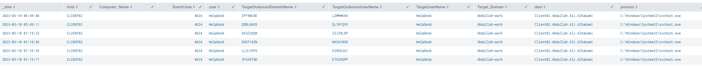
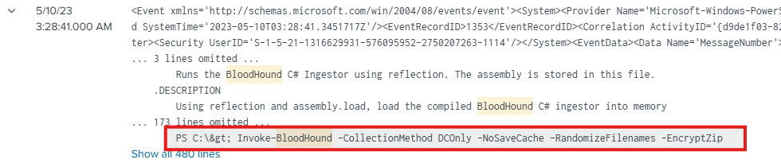
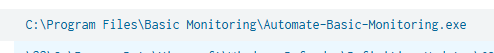
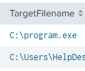
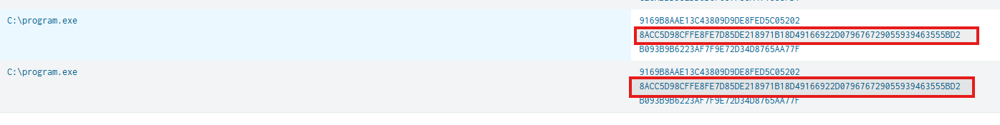
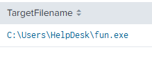
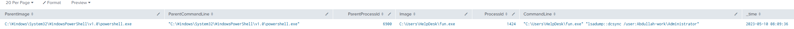
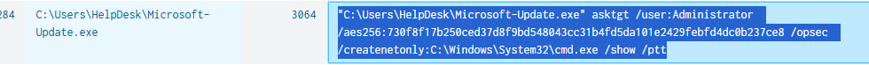
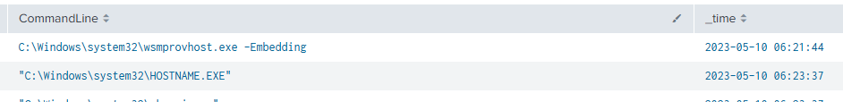

Overview
As a SOC analyst, you aim to investigate a security breach in an Active Directory network using Splunk SIEM solution to uncover the attacker's steps and techniques while creating a timeline of their activities. The investigation begins with network enumeration to identify potential vulnerabilities. Using a specialized privilege escalation tool, the attacker exploited an unquoted service path vulnerability in a specific process.
Once the attacker had elevated access, the attacker launched a DCsync attack to extract sensitive data from the Active Directory domain controller, compromising user accounts. The attacker employed evasion techniques to avoid detection and utilized a pass-the-hash (pth) attack to gain unauthorized access to user accounts. Pivoting through the network, the attacker explored different systems and established persistence.
Throughout the investigation, tracking the attacker's activities and creating a comprehensive timeline is crucial. This will provide valuable insights into the attack and aid in identifying potential gaps in the network's security.
Q1:
What is the name of the compromised account?
To identify the compromised account, I analyzed authentication logs for evidence of Pass-the-Hash (PtH) activity. Specifically, I filtered for successful logons with Logon Type 9 (NewCredentials) in combination with the presence of seclogo, which is commonly associated with runas /netonly behavior:
index="folks" EventCode=4624 Logon_Type=9 seclogo
| table _time, host, Computer_Name, EventCode, user, TargetOutboundDomainName, TargetOutboundUserName, TargetUserName, Target_Domain, dest, processThis query returned multiple authentication events originating from CLIENT02, indicating suspicious credential usage.

Analysis of the returned fields reveals two important distinctions:
user/TargetUserName: Represents the account executing the process locallyTargetOutboundUserName: Represents the account being used for outbound authentication
The results show that the HelpDesk account is consistently initiating logons while attempting to authenticate as various outbound users. This mismatch between local and outbound identities is a strong indicator of Pass-the-Hash activity, where an attacker leverages a compromised account to authenticate to other systems without knowing the plaintext password.
Additional observations include:
- The activity targets the domain Abdullah-work
- The events occur within the timeframe:
- 2023-05-10 06:49:48 (first observed logon)
- 2023-05-10 07:15:17 (last observed logon)
Pass-the-Hash is a technique in which an attacker uses an NTLM hash instead of a plaintext password to authenticate to remote systems, enabling lateral movement within the environment.
Q2:
What is the name of the compromised machine?
The compromised machine was identified through the authentication logs analyzed in Question 1. The query results consistently showed suspicious Pass-the-Hash (PtH) activity originating from a single host.
Specifically, all relevant logon events (Event ID 4624 with Logon Type 9) were associated with:
CLIENT02
This indicates that CLIENT02 is the system from which the attacker executed the malicious authentication attempts using the compromised HelpDesk account.
Q3:
What tool did the attacker use to enumerate the environment?
To identify the enumeration tool used by the attacker, I analyzed PowerShell Script Block Logging events (Event ID 4104) for suspicious activity. Given that BloodHound is a commonly used tool for Active Directory enumeration, I searched for related indicators within the logs:
index="folks" EventCode=4104 host="client02" *bloodhound*This search revealed the execution of the following command:
Invoke-BloodHound -CollectionMethod DCOnly -NoSaveCache -RandomizeFilenames -EncryptZip
This confirms that the attacker used BloodHound to enumerate the Active Directory environment.
The command demonstrates a stealth-oriented approach, as the attacker:
- Limited data collection to Domain Controllers only (
DCOnly) to minimize noise - Avoided writing cache files to disk (
NoSaveCache) to reduce forensic artifacts - Randomized output filenames (
RandomizeFilenames) to evade detection mechanisms - Encrypted the collected data (
EncryptZip) to protect it during exfiltration
BloodHound is commonly leveraged by attackers to map Active Directory relationships, including:
- User and group memberships
- Access Control Lists (ACLs)
- Domain trust relationships
- Group Policy Objects (GPOs)
This data is then used to identify privilege escalation paths and facilitate lateral movement across the environment.
The activity was observed at:
2023-05-10 03:28:41Q4:
The attacker used an Unquoted Service Path to escalate privileges. What is the name of the vulnerable service?
In Windows, services are configured with a binary path that specifies which executable should be launched. If this path:
- Contains spaces
- AND is not enclosed in quotation marks
Windows may incorrectly parse the path and attempt to execute unintended binaries.
Consider the following unquoted service path:
C:\Program Files\My Service\service.exe(space between My and Service)
Because it is not wrapped in quotes, Windows may interpret and attempt execution in the following order:
C:\Program.exeC:\Program Files\My.exeC:\Program Files\My Service\service.exe
An attacker can exploit this behavior by:
- Identifying a vulnerable service with an unquoted path
- Placing a malicious executable in a higher-precedence location, such as:
C:\Program.exeIf successful, Windows will execute the attacker-controlled binary instead of the legitimate service binary, resulting in execution under: NT AUTHORITY\SYSTEM
To locate vulnerable services, I queried for registry modifications to service ImagePath values using Sysmon Event ID 13:
index="folks" host=client02 EventCode=13
TargetObject="HKLM\\System\\CurrentControlSet\\Services\\*\\ImagePath"
| table _time, TargetObject, Details, host
| dedup DetailsThis returned the following entry:
- Time:
2023-05-09 11:38:14 - Host:
CLIENT02
| TargetObject | Details |
|---|---|
| HKLM\System\CurrentControlSet\Services\Monitoring service\ImagePath | C:\Program Files\Basic Monitoring\Automate-Basic-Monitoring.exe |
This indicates that a service named Monitoring service was configured on the system.

The service path:
C:\Program Files\Basic Monitoring\Automate-Basic-Monitoring.exe
is vulnerable because:
- It contains spaces
- It is not enclosed in quotation marks
A secure configuration would be:
"C:\Program Files\Basic Monitoring\Automate-Basic-Monitoring.exe"Due to this misconfiguration, Windows may attempt to execute:
C:\Program.exeC:\Program Files\Basic.exeC:\Program Files\Basic Monitoring\Automate-Basic-Monitoring.exe
An attacker can exploit this by placing a malicious executable such as:
C:\Program.exeIf the service is started, Windows may execute the malicious binary instead of the intended executable.
Final Answer == Automate-Basic-Monitoring.exe
Q5:
What is the SHA256 of the executable that escalates the attacker's privileges?
Building on the findings from Question 4, where an Unquoted Service Path vulnerability was identified, I investigated whether the attacker exploited this misconfiguration by placing a malicious executable in a higher-precedence path.
Given that Windows may attempt to execute C:\Program.exe when parsing an unquoted service path, I searched for the creation of this file using Sysmon Event ID 11 (File Creation):
index="folks" host=client02 EventCode=11 Program.exe
| table TargetFilename _timeThis query revealed that the file:
C:\Program.exewas created at: 2023-05-10 04:50:27

This strongly suggests that the attacker placed a malicious executable in the root directory to exploit the unquoted service path vulnerability.
To obtain the hash of the executable, I analyzed process creation events (Sysmon Event ID 1) and searched for instances where Program.exe was executed and the Image:
index="folks" host=client02 EventCode=1 Program.exe
| table Image hashesFrom the resulting events, I identified the SHA256 hash associated with the executable:
8ACC5D98CFFE8FE7D85DE218971B18D49166922D079676729055939463555BD2
Q6:
When did the attacker download fun.exe?
To determine when fun.exe was downloaded, I analyzed file creation events using Sysmon Event ID 11, which logs newly created files on the system. I filtered for occurrences of fun.exe while excluding irrelevant files such as Splunk artifacts, PowerShell scripts, and DLLs:
index="folks" host=CLIENT02 EventCode=11 TargetFilename!=*Splunk* TargetFilename!=*ps1* TargetFilename!=*dll* fun.exe
| table TargetFilename _time
This query returned a file creation event indicating that the executable:
C:\Users\HelpDesk\fun.exewas created on the system at: 2023-05-10 05:08:57
Since Sysmon Event ID 11 captures file creation activity, this timestamp represents when fun.exe was written to disk, which strongly indicates the time it was downloaded or dropped onto the system by the attacker.
Q7:
What is the command line used to launch the DCSync attack
To identify the command used to perform the DCSync attack, I analyzed process creation events (Sysmon Event ID 1) associated with the previously identified malicious executable fun.exe.
index="folks" host=CLIENT02 EventCode=1 Image=*fun.exe*
| table ParentImage, ParentCommandLine, ParentProcessId, Image, ProcessId, CommandLine, _timeThis query returned a relevant event at: 2023-05-10 08:09:36
The event shows PowerShell spawning fun.exe with the following command line: "C:\Users\HelpDesk\fun.exe" "lsadump::dcsync /user:Abdullah-work\Administrator"

This command indicates that the attacker executed a DCSync attack using a renamed Mimikatz binary (fun.exe). The lsadump::dcsync module is a well-known Mimikatz function that allows an attacker to request credential data from a Domain Controller.
A DCSync attack works by abusing Active Directory replication permissions, allowing the attacker to impersonate a Domain Controller and request sensitive account data. Specifically, this technique can retrieve:
- NTLM password hashes
- Kerberos encryption keys
- Other credential-related secrets
In this case, the attacker targeted the account: Abdullah-work\Administrator
This demonstrates that the attacker had obtained sufficient privileges to perform replication operations, effectively mimicking a legitimate Domain Controller to extract credentials.
Q8:
What is the original name of fun.exe?
To determine the original name of fun.exe, I analyzed the process metadata associated with the executable. While the command-line arguments (lsadump::dcsync) strongly suggested that the binary was a renamed version of Mimikatz, I verified this by inspecting the file’s detailed attributes within the event data.
By expanding the event details for fun.exe, the OriginalFileName field revealed: mimikatz.exe
Q9:
The attacker performed the Over-Pass-The-Hash technique. What is the AES256 hash of the account he attacked?
Over-Pass-the-Hash (also known as Pass-the-Key) is a technique that allows attackers to request Kerberos Ticket Granting Tickets (TGTs) using stolen credential material. Instead of using a plaintext password, the attacker leverages either an NTLM hash or a Kerberos AES key to authenticate with the Domain Controller.
To identify this activity, I searched for process creation events (Sysmon Event ID 1) containing the asktgt flag, which is commonly associated with Kerberos ticket requests using tools such as Mimikatz or Rubeus:
index="folks" host=CLIENT02 EventCode=1 *asktgt*
| table ParentImage, ParentCommandLine, ParentProcessId, Image, ProcessId, CommandLineThis query returned multiple results between:
- 2023-05-10 06:49:48
- 2023-05-10 07:15:17
indicating repeated attempts to request Kerberos tickets using different accounts.
The command lines show the attacker using a renamed tool (Microsoft-Update.exe) to execute asktgt operations against multiple accounts, including:
it-supportMohamedAdministrator
One of the observed commands is:
"C:\Users\HelpDesk\Microsoft-Update.exe" asktgt /user:it-support /aes256:e1545adafb17d4e61b66a6ecc189718aed4ad3e5c3382ea08575a499ed231428 /opsec /createnetonly:C:\Windows\System32\cmd.exe /show /ptt
This command demonstrates that the attacker is:
- Using an AES256 Kerberos key for authentication
- Requesting a TGT for the
it-supportaccount - Injecting the ticket into a new session (
/ptt) for further use
Although multiple accounts were targeted, this command clearly shows the AES256 key associated with the it-support account being used to successfully request a Kerberos ticket.
Q10:
What service did the attacker abuse to access the Client03 machine as Administrator?
To identify how the attacker accessed Client03 as Administrator, I analyzed process creation events (Sysmon Event ID 1) on CLIENT02. Based on previous findings, the attacker was actively using a renamed tool (Microsoft-Update.exe), so I focused on activity involving this executable:
index="folks" host=CLIENT02 EventCode=1 Image=*Microsoft* Administrator
| table ParentImage, ParentCommandLine, ParentProcessId, Image, ProcessId, CommandLine, _timeThis query returned a relevant event at: 2023-05-10 06:18:19
The associated command line is:
"C:\Users\HelpDesk\Microsoft-Update.exe" s4u /user:Client02$ /aes256:0a87dfe150dc1da194b965a620e2acd94aea917185c7bb6731aa323470f357d9 /msdsspn:http/Client03 /impersonateuser:Administrator /ptt
The executable Microsoft-Update.exe was previously identified as a renamed version of Rubeus, a tool commonly used for Kerberos abuse. The command above indicates a Kerberos S4U (Service-for-User) attack, which leverages delegation to impersonate another user.
Key elements of the command:
/user:Client02$→ Uses the machine account of CLIENT02/impersonateuser:Administrator→ Requests impersonation of the Administrator account/msdsspn:http/Client03→ Requests a service ticket for the HTTP service on Client03/ptt→ Injects the generated ticket into memory (Pass-the-Ticket)
As a result, the Domain Controller issues a valid Kerberos service ticket that allows the attacker to authenticate as Administrator to the specified service.
Final Answer == http/Client03'
Q11:
The Client03 machine spawned a new process when the attacker logged on remotely. What is the process name?
To identify the process spawned during the attacker’s remote logon, I analyzed process creation events (Sysmon Event ID 1) on CLIENT03:
index="folks" host=CLIENT03 EventCode=1 Image!=*Splunk*
| table ParentImage, ParentCommandLine, ParentProcessId, Image, ProcessId, CommandLine, _time
| sort _timeTo focus on relevant activity, I applied a time filter based on the previously identified remote access event in Question 10 (2023-05-10 06:18:19), narrowing the results to the timeframe surrounding the attacker’s lateral movement.
Upon reviewing the filtered results, I observed that at: 2023-05-10 06:21:44
the following process was spawned:
C:\Windows\System32\wsmprovhost.exe
The process wsmprovhost.exe is a legitimate Windows binary known as the Windows Management Provider Host, which is associated with Windows Remote Management (WinRM).
This finding aligns with the activity identified in Question 10, where the attacker: Authenticated as the Administrator account
Since WinRM operates over HTTP and spawns wsmprovhost.exe during remote sessions, the presence of this process confirms that the attacker connected to Client03.
Q12:
The attacker compromises the it-support account. What was the logon type?
To determine the logon type associated with the compromise of the it-support account, I analyzed process creation activity involving Kerberos ticket requests. Specifically, I searched for commands containing the asktgt flag as previously analyzed, which is commonly used by tools such as Rubeus to request Kerberos tickets:
index="folks" host=CLIENT02 EventCode=1 *asktgt*
| table ParentImage, ParentCommandLine, ParentProcessId, Image, ProcessId, CommandLineThis query revealed the following command as seen previously:
"C:\Users\HelpDesk\Microsoft-Update.exe" asktgt /user:it-support /aes256:e1545adafb17d4e61b66a6ecc189718aed4ad3e5c3382ea08575a499ed231428 /opsec /createnetonly:C:\Windows\System32\cmd.exe /show /ptt
The executable Microsoft-Update.exe was previously identified as a renamed version of Rubeus, and this command demonstrates an Over-Pass-the-Hash (Pass-the-Key) attack. The attacker uses the AES256 Kerberos key of the it-support account to request a valid Ticket Granting Ticket (TGT).
the important parameter in this command is:
/createnetonly:C:\Windows\System32\cmd.exeThis option creates a new network-only logon session, which corresponds to: Logon Type 9 (NewCredentials)
This type of logon is typically generated when using runas /netonly or similar mechanisms, where credentials are not validated locally but are used for outbound network authentication.
Q13:
What ticket name did the attacker generate to access the parent DC as Administrator?
To identify the ticket generated for accessing the parent domain controller, I analyzed process creation events (Sysmon Event ID 1) involving the Administrator account on CLIENT02 as I had observed interesting activity in my earlier investigation:
index="folks" host=CLIENT02 Administrator EventCode=1
| table ParentImage, ParentCommandLine, ParentProcessId, Image, ProcessId, CommandLine, _time
During this analysis, I identified activity consistent with Golden Ticket creation using a renamed Mimikatz binary (Better-to-trust.exe).
At: 2023-05-10 07:36:07 the following command was executed:
"C:\Users\HelpDesk\Better-to-trust.exe" "kerberos::golden /user:Administrator /domain:Abdullah.Ali.Alhakami /sid:S-1-5-21-1316629931-576095952-2750207263 /sids:S-1-5-21-2314577697-1335098093-3289815499-519 /rc4:8a1a8ab21f32a13a8d83254d33448424 service:krbtgt /target:Ali.Alhakami /ticket:trust-test2.kirbi"This command demonstrates the creation of a Kerberos Golden Ticket, which enables the attacker to forge authentication tickets and gain unauthorized access across the domain or forest.
Key indicators include:
kerberos::golden→ Golden Ticket generation/user:Administrator→ Impersonating the Administrator accountservice:krbtgt→ Leveraging the Kerberos ticket-granting service/target:Ali.Alhakami→ Targeting the parent domain/ticket:trust-test2.kirbi→ Name of the generated ticket
This confirms that the attacker generated a forged Kerberos ticket specifically to access the parent domain as Administrator.